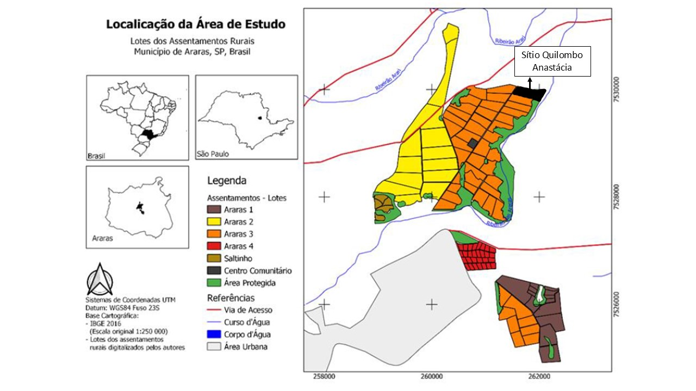

Restauração ecológica em uma comunidade de matriz africana praticante do Candomblé (Araras, SP, Brasil)
Ecological restoration in an African community practicing Candomblé (Araras, SP, Brazil)
Marcos Vinícius da Cruz PEREIRA1; Camila Fernanda Silva CAMILO2; Elvio Aparecido MOTTA3; Renata SEBASTIANI4
1 Universidade Federal de São Carlos /Licenciatura em Ciências Biológicas – marcospereira@estudante.ufscar.br
2 Universidade Federal de São Carlos /Licenciatura em Ciências Biológicas – camilacamilo@estudante.ufscar.br
3 Ministério do Desenvolvimento Agrário e Agricultura Familiar/Ilê Axé de Iansã/Sítio Quilombo Anastácia - elvio.motta@mda.gov.br
4 Universidade Federal de São Carlos/Programa de Pós-Graduação em Ciências Ambientais – sebastiani@ufscar.br
RESUMO
As comunidades de matriz africana têm seu modo de vida pautado na relação próxima com a natureza. O presente trabalho traz informações e relatos sobre restauração ecológica de um fragmento de Floresta Estacional Semidecidual no Sítio Quilombo Anastácia, onde reside uma comunidade de matriz africana de agricultura familiar praticante do Candomblé, denominada Ylê Axé de Yansã. Além da íntima relação entre a religião e a natureza, a comunidade prospera com a criação de animais e produção agroflorestal, fatores determinantes para a conservação e manutenção do ambiente natural. Foram plantadas cerca de 620 mudas pertencentes à 44 espécies de plantas, escolhidas a partir do diálogo com as lideranças da comunidade. As espécies vegetais foram escolhidas devido aos usos feitos pela comunidade, priorizando espécies nativas para manutenção da biodiversidade local. A convivência com a comunidade do Sítio Quilombo Anastácia durante o presente estudo indicou como comunidades de matriz africana precisam lutar para exercerem seus direitos ao território e à religiosidade e como podem contribuir para a conservação da biodiversidade.
Palavras-chave: Candomblé; comunidade tradicional; conservação da biodiversidade
ABSTRACT
African communities have their way of life based on a close relationship with nature. This work provides information and reports on the ecological restoration of a fragment of Semideciduous Seasonal Forest at Sítio Quilombo Anastácia, where lives an African family farming community practicing Candomblé called Ylê Axé de Yansã. In addition to the intimate relationship between religion and nature, the community prospers with agroforestry production, determining factors for the conservation and maintenance of the natural environment. Around 620 seedlings belonging to 44 plant species were planted, chosen based on dialogue with community leaders. The plant species were chosen due to the uses made by the community, prioritizing native species to maintain local biodiversity. Coexistence with the community of Sítio Quilombo Anastácia during the present study indicated how communities of African origin need to fight to exercise their rights to territory and religion and how they can contribute to the conservation of biodiversity.
Keywords: candomblé; traditional comunity; biodiversity conservation
Introdução
A natureza é um espaço sagrado, onde celebram-se as tradições e os rituais das religiões de matriz africana brasileiras, cuja atuação é essencial para a conservação dos recursos naturais. As comunidades tradicionais que praticam Candomblé no Brasil estão assentadas na natureza, para que valorizem e mantenham a biodiversidade (MOTTA et al., 2020). Independente do uso, para o Candomblé todas as plantas são importantes, pois sem folha não há Orixás. Assim, é possível destacar que os princípios do Candomblé contribuem para a conservação da biodiversidade, na medida que necessitam da natureza para sua sobrevivência (ZANETTE, 2020).
O tema do retorno ao sagrado e da necessidade do estabelecimento de uma religação espiritual com a natureza se constitui numa das recorrências no pensamento ecológico atual (BOAES, 2011). No complexo contexto do Candomblé, onde impera a unidade do ser humano ao meio natural, as plantas têm um importante valor simbólico. Portanto, além de apresentar um papel ritualístico essencial, as plantas auxiliam na caracterização do espaço sagrado que promove a manutenção de suas tradições e costumes (FERNANDES, 2022). Tal ligação com a natureza tem o potencial de estimular processos educativos e práticas sociais que tendem a preservar e recuperar seus territórios e os espaços que ocupam, promovendo assim o plantio de diversas espécies de plantas (ZANETTE, 2020).
Os assentamentos rurais no Brasil resultam de longos processos de luta de homens e mulheres para garantia de direito e acesso à terra, cujo estabelecimento promove justiça social, fortalecimento da agricultura familiar e melhora condições de vida de agricultores e agricultoras em múltiplos territórios, na paisagem rural brasileira (SEBASTIANI et al., 2020). Além disso, muitos assentamentos abrigam comunidades e povos tradicionais que exercem a agricultura familiar, como é o caso dos Assentamentos Rurais de Araras, onde localiza-se o Sítio Quilombo Anastácia. Existe uma parceria entre a UFSCar campus Araras e o Sítio Quilombo Anastácia para a realização de diversas atividades envolvendo práticas agroecológicas e de conservação da biodiversidade, firmada no diálogo e troca de saberes. Dentre as atividades, destaca-se a restauração ecológica no Sítio Quilombo Anastácia, visando não só a manutenção do fragmento florestal e da nascente presente no lote, mas também o plantio de espécies vegetais de uso religioso pela comunidade.
Materiais e Métodos
Área de estudo
O trabalho foi realizado em um dos lotes dos Assentamentos Rurais de Araras (22º21’27” S e 47º23’05” W), município onde há cerca de 644,831km² de área territorial e uma população de aproximadamente 130.866 pessoas. Os Assentamentos Rurais de Araras contabilizam cerca de 718,12 de hectares e abrigam cerca de 101 famílias (SILVA et al., 2021).
Figura 1. Mapa detalhado dos assentamentos regularizados no município de Araras com a localização específica do lote do Sítio Quilombo Anastácia (Assentamento Araras 3, Araras, SP, Brasil).

Fonte: Modificado de Silva et al. (2021) em 07/08/2024.
Ocupando uma área de aproximadamente 9,40 hectares (FERNANDES, 2022) e fundado em 1997, o Sítio Quilombo Anastácia é um território adquirido através de um processo intenso de luta por terra em 1995. É sede da comunidade tradicional de matriz africana que exerce agricultura familiar e compõe a Organização da Sociedade Civil de Interesse Público (OSCIP) Ylê Axé de Yansã, determinada em 15 de setembro de 1994. Em 2002, a comunidade foi declarada como utilidade pública municipal, através da lei nº 3.475 (MOTTA et al., 2021). Em dezembro de 2018, foi reconhecido pelo Ministério da Cultura, por intermédio da Secretaria da Diversidade Cultural como Ponto de Cultura, através da Lei federal nº 13.018/2014, no Programa Cultura Viva do Estado de São Paulo (BRASIL, 2014). Desde sua implantação, a comunidade é liderada pela mãe e pai de santo Doná Oyassy (Maria Rosa Virgulino) e Tatá Kejessy (Élvio Aparecido Motta) respectivamente, colaboradores centrais do presente trabalho. Estas lideranças são os fundadores do Sítio Quilombo Anastácia, após longo processo de luta pela terra e principais responsáveis pelo sucesso dos projetos de restauração realizados.
No que concerne ao exercício da agricultura familiar, o Sítio Quilombo Anastácia realiza o policultivo, com a combinação de diversas culturas agrícolas como mandioca, milho, açafrão e gengibre. Outro sistema importante para a comunidade é o quintal que fica no entorno da casa ocupado por uma ampla variedade de plantas, tais como jaca, goiaba, genipapo, limão, pitanga, banana e jaboticaba, espécies de importância religiosa e alimentícia (FERNANDES et al., 2023).
Ylê (do idioma iorubá ilè), significa "casa", “lar”. Este termo é um dos elementos que compõem a denominação das comunidades de matriz africana dedicadas ao culto dos Orixás, geralmente seguida do nome da divindade protetora do terreiro. Este espaço possui uma relação extremamente íntima com a natureza, já que se compreende que é dela que se emanam as energias cultuadas nos ritos da comunidade (FERNANDES, 2022). Axé representa uma saudação, incitando “poder” e Yansã, segundo o Candomblé, é um Orixá que domina a tempestade e o fogo, manifestando sua vocação através dos raios, das ventanias (SILVA, 2016).
A comunidade sediada no Sítio Quilombo Anastácia pertence à nação Jeje Nagô e possui importante representatividade como aquilombamento, mantendo viva a resistência pela cultura negra e expondo ao mesmo tempo a força dos seus líderes em um extenso processo de luta pela terra e a possibilidade de exercerem seu modo de vida em meio à natureza, própria de sua religião e cultura (MOTTA et al., 2020).
A restauração ecológica relatada neste trabalho foi realizada em uma área presente no Sítio Quilombo Anastácia, em um fragmento de Floresta Estacional Semidecidual (Mata Atlântica) contínua à floresta ciliar que abriga uma nascente (Figura 2). A restauração da área se pautou no diálogo com a família sobre as espécies vegetais a serem implantadas com o objetivo central de harmonizar o uso das plantas pela família, principalmente religioso, ao processo de restauração ecológica da área.
Figura 2. Ortomosaico do Sítio Quilombo Anastácia (Assentamento Araras 3, Araras, SP, Brasil). O mapa indica o limite do lote, área inicialmente restaurada em vermelho, a área que recebeu posterior enriquecimento florestal em amarelo e o curso d 'água à direita em azul.

Fonte: Modificado de Fernandes (2022) em 17/06/2024.
Para manutenção de seus hábitos cotidianos e religiosos as comunidades de matriz africana, especialmente aquelas praticantes do Candomblé, dependem de água limpa e de diversas espécies de plantas (ZANETTE, 2020). No que se refere ao Sítio Quilombo Anastácia, durante a composição dos Assentamentos Rurais de Araras foi mantida uma Reserva Legal, com vegetação nativa e corpos d’água, mas que não são suficientes para manter sequer as práticas da agricultura familiar praticada pelas famílias assentadas, sendo por si só também insuficiente para permitir as práticas religiosas e culturais. Essa área está isolada e desconectada de outros corpos d’água existentes, distantes cerca de 400 metros, localizados em áreas agropecuárias (sítios) e contíguas à Reserva Legal. Segundo as famílias assentadas, o volume destes corpos d’água têm diminuído anualmente, devido ao desmatamento e ao uso inadequado das terras (SEBASTIANI et al., 2019).
O plantio de restauração ocorreu em dois momentos no Sítio Quilombo Anastácia (Figura 2). A área em vermelho, que representa a área restaurada em outubro de 2021 (primeiro momento), ocupa aproximadamente 3.000 m2; a área em amarelo representa o local onde foi realizado o enriquecimento florestal (segundo momento), em março de 2024 e teve como objetivo dar continuidade à ocupação da área por cobertura vegetal. Em ambas as etapas foi realizado o plantio de mudas de interesse para uso religioso da família, ao mesmo tempo que poderiam promover uma maior diversidade de espécies na restauração ecológica.
A escolha das espécies vegetais implantadas se pautou no vasto conhecimento botânico das lideranças da comunidade por estar ligado à sua religião, cultura e culinária. Além disso, o diálogo estabelecido permitiu a seleção de espécies que atendessem os seguintes aspectos: produção de recursos não madeireiros; favorecimento da produção de mel a partir da implantação de um apiário de abelha Jataí (Tetragonisca angustula Latreille, 1811) para produção de mel; proteção do solo e do corpo d’água e a continuidade da vegetação nativa ali existente, devido a estreita relação entre o Candomblé, as plantas e a natureza de maneira geral.
Metodologia
A restauração ecológica da área indicada na Figura 2 iniciou-se em 2021. Todas as etapas dos projetos foram realizadas com participação de integrantes da comunidade de forma remota e presencial. A primeira etapa se baseou na avaliação inicial do terreno, levando em consideração aspectos como o tipo de solo e seu nível de degradação, assim como o tipo de vegetação da região, a qual é predominante a Floresta Estacional Semidecidual. A partir daí, foi possível a escolha das espécies a serem implantadas junto com a comunidade, selecionadas principalmente devido ao uso religioso, dando prioridade para espécies nativas da formação vegetal reconhecida para a área de estudo.
A segunda etapa foi o plantio das mudas das espécies selecionadas na área em vermelho indicada na Figura 2. O plantio foi realizado em forma de mutirão, contando com pessoas do Sítio Quilombo Anastácia e estudantes de graduação da UFSCar campus Araras. Após o plantio realizado em 2021, a terceira etapa constituiu no acompanhamento da taxa de mortalidade das mudas plantadas, tendo como base o número de mudas mortas e a qual espécie pertenciam. Por fim, a última etapa foi o enriquecimento da área com mudas de quatro espécies que não existiam no local e que a comunidade possuía interesse em obtê-las. Devido ao número reduzido de mudas, essa etapa foi realizada somente pela equipe de trabalho que compõe o presente estudo. O plantio de enriquecimento foi efetuado com o intuito de aproveitar a regeneração local e o sombreamento realizado pelas mudas que foram inseridas no lote. Além disso, também foi pensado a ampliação da diversidade botânica do local, visando promover uma maior cobertura arbórea e preencher os espaços de clareiras com novas espécies que não foram utilizadas na restauração efetuada anteriormente.
Resultados e Discussão
O Quadro 1 contém as espécies vegetais usadas na restauração ecológica do Sítio Quilombo Anastácia, algumas delas indicando seu uso religioso conforme parcialmente compilado por Fernandes (2022). Foram plantadas cerca de 620 mudas pertencentes à 44 espécies.
Foram inseridas espécies com alto índice de produção de néctar, essencial para a produção de mel pelas abelhas, assim como espécies com um maior período de floração. Também foram escolhidas espécies que já se encontravam na área antes do desflorestamento, como por exemplo a Embaúba, típica da região. Dentre as espécies listadas, constituem exemplos de fonte de recurso não madeireiro os frutos da juçara para confecção de polpas e sucos, e da aroeira pimenteira, cujos frutos são usados como condimento (PEREIRA et al., 2020).
Dentre as espécies escolhidas em parceria com a comunidade e utilizadas para a restauração ecológica no presente estudo foram selecionadas três espécies ameaçadas de extinção (Aspidosperma parvifolium A.DC., Euterpe edulis Mart. e Cedrela fissilis Vell.) e apenas a goiaba vermelha não é nativa do Brasil (Psidium guajava L.), mas foi utilizada no presente estudo por ser uma espécie frutífera. Esses aspectos indicam a relevância da restauração ecológica em parceria com comunidades de matriz africana para sua manutenção e para a conservação da biodiversidade.
Quadro 1. Espécies utilizadas na restauração ecológica no Sítio Quilombo Anastácia. O 1º plantio foi realizado em outubro de 2021 e o 2º plantio foi realizado em março de 2024. Quant.: quantidade de mudas plantadas por espécie. Usos segundo Fernandes (2022): religioso (REL), medicinal (MED), culinário (CUL), ou recurso não-madeireiro (REC). (*) Espécies ameaçadas de extinção segundo Flora e Funga do Brasil (2024). (E) Espécie exótica segundo Flora e Funga do Brasil (2024).
| Família/ Espécies | Nome Popular | Quant. | Usos | Plantio |
|---|---|---|---|---|
| Anacardiaceae | ||||
| Schinus terebinthifolia Raddi | Aroeira pimenteira | 40 | REL; REC | 1º |
| Apocynaceae | ||||
| Aspidosperma parvifolium A.DC.* | Guatambu oliva | 7 | 1º | |
| Bignoniaceae | ||||
| Cybistax antisyphilitica (Mart.) Mart. | Ypê verde | 1 | 2º | |
| Jacaranda cuspidifolia Mart. | Caroba | 35 | 1º | |
| Handroanthus chrysotrichus (Mart. ex DC.) Mattos | Ipê amarelo cascudo | 7 | REL | 1º |
| Handroanthus chrysotrichus (Mart. ex DC.) Mattos | Ipê amarelo cascudo | 7 | REL | 1º |
| Handroanthus vellosoi (Toledo) Mattos | Ipê amarelo de casca lisa | 7 | REL | 1º |
| Handroanthus impetiginosus (Mart. ex DC.) Mattos | Ipê roxo | 7 | REL | 1º |
| Handroanthus heptaphyllus (Vell.) Mattos | Ipê roxo de sete folhas | 7 | REL | 1º |
| Sparattosperma leucanthum (Vell.) K.Schum. | Caroba de flor branca | 35 | 1º | |
| Tabebuia roseoalba (Ridl.) Sandwith | Ipê branco | 7 | 1º | |
| Clusiaceae | ||||
| Garcinia gardneriana (Planch. & Triana) Zappi | Bacupari | 7 | 1º | |
| Fabaceae | ||||
| Anadenanthera colubrina var cebil (Griseb.) Autschul | Angico vermelho | 7 | 1º | |
| Cassia grandis L.f. | Cássia grande | 7 | 1º | |
| Copaifera langsdorffii Desf. | Copaíba | 7 | REL; MED | 1º |
| Cyclolobium brasiliense Benth. | Louveiro | 7 | 1º | |
| Enterolobium contortisiliquum (Vell.) Morong | Tamboril | 18 | 1º | |
| Hymenaea courbaril L. | Jatobá | 7 | 1º | |
| Inga vera Willd. | Inga quatro quinas | 40 | REL; MED | 1º |
| Machaerium nyctitans (Vell.) Benth. | Jacarandá bico de pato | 35 | 1º | |
| Machaerium villosum Vogel | Jacarandá paulista | 7 | REL | 1º |
| Myroxylon peruiferum L.f. | Cabreuva vermelha | 7 | 1º | |
| Peltophorum dubium (Spreng.) Taub. | Canafístula | 35 | 1º | |
| Pterocarpus violaceus Vogel | Aldrago | 7 | 1º | |
| Pterogyne nitens Tul. | Amendoim bravo | 35 | 1º | |
| Schizolobium parahyba (Vell.) Blake | Guapuruvu | 11 | 2º | |
| Senegalia polyphylla (DC.) Britton & Rose | Monjoleiro | 35 | 1º | |
| Lauraceae | ||||
| Ocotea pulchella (Nees & Marti.) Mez | Canelinha | 4 | 2º | |
| Lecythidaceae | ||||
| Cariniana estrellensis (Raddi) Kuntze | Jequitibá branco | 8 | 2º | |
| Malvaceae | ||||
| Ceiba speciosa (A. St.-Hil.) Ravenna | Paineira rosa | 7 | 1º | |
| Guazuma ulmifolia Lam. | Mutambo | 5 | 2º | |
| Meliaceae | ||||
| Cedrela fissilis Vell.* | Cedro rosa | 7 | 2º | |
| Myrtaceae | ||||
| Eugenia involucrata DC. | Cereja do rio grande | 7 | 1º | |
| Eugenia pyriformis Cambess. | Uvaia | 7 | 1º | |
| Eugenia uniflora L. | Pitanga | 7 | 1º | |
| Myrciaria glazioviana (Kiaersk.) G.M.Barroso ex Sobral | Cabeludinha | 7 | 1º | |
| Myrciaria tenella (DC.) O.Berg | Cambuí | 7 | 1º | |
| Plinia trunciflora (O.Berg) Kausel | Jabuticaba | 10 | 1º | |
| Psidium guajava L.E | Goiaba vermelha | 35 | CUL; REL; MED | 1º |
| Rhamnaceae | ||||
| Colubrina glandulosa Perkins | Saguaraji vermelho | 7 | 1º | |
| Genipa americana L. | Jenipapo | 35 | CUL; REL | 1º |
| Sapotaceae | ||||
| Pouteria torta (Mart.) Radlk. | Abiu | 7 | 1º | |
| Urticaceae | ||||
| Cecropia pachystachya Trécul | Embaúba | 12 | MED; REL | 2º |
| Verbenaceae | ||||
| Citharexylum myrianthum Cham. | Tucaneiro | 35 | 1º |
Fonte: Dados do presente estudo.
Os resultados se mostram promissores em relação ao desenvolvimento das mudas sobreviventes que puderam ser observadas nas visitas ao local. Algumas espécies plantadas em outubro de 2021 já apresentam altura considerável e até mesmo estágio de floração e formação de frutos, como o caso da aroeira pimenteira (Figura 3). A espécie foi selecionada pela comunidade devido ao uso em ritos religiosos, recurso não-madeireiro e como fonte de pólen e néctar para as abelhas Jataí do meliponário construído próximo à área de restauração (PEREIRA et al., 2020).
De acordo como Ceccon (2019), é importante que exista ampla participação social e sinergia entre o conhecimento científico ecológico e o tradicional nas diferentes fases de um projeto de restauração ecológica, que deve constituir uma aprendizagem mútua entre os participantes, através de um diálogo de saberes. A comunicação e o alinhamento do projeto permitiram a criação de uma comunicação rica e espontânea entre as partes envolvidas, tanto em relação a processos técnicos de plantio e manejo das espécies inseridas, quanto no aspecto social e cultural aos quais estão inseridos a comunidade. Os ideais de sustentabilidade, o engajamento político-ambiental, assim como a relação cultural e religiosa da família com a natureza, próprios das religiões de matriz africana, foram fatores que potencializaram sucesso do projeto.
Figura 3. Restauração ecológica do Sítio Quilombo Anastácia (Assentamento Araras 3, Araras, SP, Brasil). A. Plantio realizado em outubro de 2021. B. Muda de Cecropia pachystachya Trécul (embaúba) no plantio de enriquecimento florestal, realizado em março de 2024. C. Muda de Senegalia polyphylla (DC.) Britton & Rose (monjoleiro) após cerca de um ano do plantio em 2021. D. Muda de Myrciaria glazioviana (Kiaersk.) G.M.Barroso ex Sobral (cabeludinha) após cerca de um ano do plantio em 2021. E. Estado atual de uma muda de Inga vera Willd (Ingá) com aproximadamente dois metros de altura, plantado em outubro de 2021. F. Estado atual de uma muda de Schinus terebinthifolia Raddi (Aroeira pimenteira) plantada em outubro de 2021.
Fonte: próprios autores.
Tais resultados demonstram a importância da participação da comunidade na escolha das espécies vegetais durante o planejamento do projeto. Além do uso religioso, que inclui o cotidiano ritualizado das comunidades de matriz africana, as plantas são parte essencial da vida da família. A comunidade gerencia a evolução espacial da área, favorecendo a manutenção da sua cultura religiosa, saúde e alimentação, guiando o processo de ocupação da terra, promovendo cobertura vegetal, diversificando o uso da terra e favorecendo o uso e conservação da agrobiodiversidade (MOTTA, 2020).
Tomando como base a experiência na execução da restauração ecológica no Sítio Quilombo Anastácia, ficou evidente que as comunidades de matriz africanas precisam ter a luta pelo território reconhecida e respeitada por vários motivos. Um importante aspecto a ser considerado é o direito ao exercício de suas práticas religiosas, práticas essas que necessitam da biodiversidade e de outros recursos naturais para serem realizadas. Consequentemente, comunidades de matriz africanas podem colaborar para a conservação da biodiversidade, na medida que precisam manter esses recursos naturais. FERNANDES et al. (2024) já reconhecem esse fato, mediante a análise do fornecimento de diversificados serviços ecossistêmicos do Sítio Quilombo Anastácia, conferindo-lhe grande importância ambiental, social e cultural. Estas autoras destacam também que a existência do Sítio Quilombo Anastácia simboliza a resistência ao apagamento da contribuição do povo negro no desenvolvimento da sociedade brasileira.
O sucesso do processo de restauração da área terá seus objetivos alcançados a longo prazo desde que fortaleça a comunidade em relação à manutenção de sua religiosidade e seja reconhecido seu processo de luta pela terra, processo que teve início há quase três décadas com o reconhecimento do Sítio Quilombo Anastácia como patrimônio cultural, mantendo viva a cultura e a resistência de comunidades tradicionais no país, bem como local sagrado para exercício do Candomblé.
Conclusão
Além do uso cultural e religioso das espécies plantas neste processo de restauração ecológica por parte do Sítio Quilombo Anastácia, resultados esperados a médio e longo prazo são desde a melhoria da capacidade hídrica dos corpos d’água da região, assim como aumento da qualidade da água e o aumento da umidade do próprio solo, como consequência da cobertura arbórea proporcionada pela restauração.
Considerando o complexo contexto que estão inseridas as comunidades de matriz africana e sua íntima relação com à natureza, a restauração realizada na área proporcionará benefícios quanto à valorização de seu espaço sagrado e de sua religiosidade, assim como agrega uma melhor qualidade de vida à comunidade, mantendo vivo seus ideais de conservação e preservação dos ambientes naturais.
Em continuidade à parceria entre o Sítio Quilombo Anastácia e a UFSCar campus Araras, como etapas futuras para manutenção da religiosidade da comunidade e da biodiversidade local pretende-se realizar o enriquecimento do restante da área restaurada em outubro de 2021, obter a indicação dos usos das demais espécies usadas na restauração ecológica, continuar o acompanhamento da taxa de sobrevivência das mudas plantadas e realizar um levantamento florístico da área de floresta estacional semidecidual presente no Sítio Quilombo Anastácia.
Referências
BOAES, A. G.; Oliveira, R. S. Religiões afro-brasileiras e ética ecológica: ensaiando aproximações. Revista Brasileira de História das Religiões, v.3, n.9, 2019.
BRASIL. Lei nº 13.018, de 22 de julho de 2014. Dispõe sobre a instituição da Política Nacional de Cultura Viva. 2014.
CECCON, E. Desafios da restauração ecológica no mundo e no Brasil. Anais do VIII Simpósio de Restauração Ecológica: Desafio do Processo Frente à Crise Ambiental. Instituto de Botânica, São Paulo, 2019, p. 61-66.
FERNANDES, E. M. S. Serviços ecossistêmicos de um agroecossistema gerido por uma comunidade de matriz africana: o exemplo Ylê Axé de Yansã. Dissertação (Mestrado em agroecologia e desenvolvimento rural), Universidade Federal de São Carlos, São Carlos, 2022, p. 1-103.
FERNANDES, E. M. S.; MOTTA, E. A; SEBASTIANI, R. A comunidade de matriz africana Ylê Axé de Yansã como exemplo de resiliência em meio à busca pela segurança e soberania alimentar. Anais do X Encontro da Rede de Estudos. Universidade Federal de São Carlos, São Carlos, 2023.
FERNANDES, E. M. S. et al. Avaliação da capacidade de um agroecossistema gerido por comunidade de matriz africana no fornecimento de serviços ecossistêmicos. Geoambiente On-line, n. 48, 2024.
Flora e Funga do Brasil. Jardim Botânico do Rio de Janeiro.
MOTTA, E. A. et al. Religious and cultural uses of plants promoting agroecological transitions in rural settlements in Brazil. Brazilian Journal of Agroecology and Sustainability, v.2, n. 2, 2020.
PEREIRA, M. V. C. Participação direta dos agricultores familiares no processo de restauração ecológica do Sítio Quilombo Anastácia (Assentamento Araras III, SP). Anais do XVII Congresso Nacional de Meio Ambiente, v.12, p. 1–5. Instituto Federal Sul de Minas, Poços de Caldas, 2020.
SEBASTIANI, R. et al 2019. O diálogo interinstitucional na restauração ecológica nos Assentamentos Rurais de Araras (SP). Resumos do VIII Simpósio de Restauração Ecológica: Desafio do Processo Frente à Crise Ambiental. Instituto de Botânica, SP, 2019, p. 181.
SEBASTIANI, R. et al. Assentamentos rurais e universidades: relatos da experiência de uma parceria no município de Araras (SP, BRASIL). Anais do VIII Congresso Latinoamericano de Agroecologia. Sociedad Científica Latinoamericana de Agroecología, Montevidéu, 2020, v.2, p.403 – 408.
SILVA, A. V. Comida de santo: resistência e representação do sagrado pela culinária. Trabalho de Conclusão de Curso (Especialização em História e Cultura Africana e Afro-brasileira). Departamento de História do CERES - Campus de Caicó, Universidade Federal do Rio Grande do Norte. Caicó, 2016.
SILVA, B. A.; OLIVEIRA, R. E.; CARDOSO-LEITE, E. Análise espacial da cobertura arbórea em paisagem de assentamentos de reforma agrária em Araras (SP, Brasil). Ra'e Ga, v. 51, p. 81-102, 2021.
SILVA, S. G.; FERNANDES, S. S. L.; PADOVAN, M. P. Restauração ecológica e educação ambiental em um sistema agroflorestal biodiverso no Assentamento Itamarati, Ponta Porã, MS. Resumos da Jornada de Iniciação à pesquisa da Embrapa. Dourados, 2015.
ZANETTE, P. H. O. Contribuições da cultura de matriz africana para a conservação da biodiversidade: A experiência do Ilê Omo Aiye, comunidade de Candomblé de São Luiz do Paraitinga/SP. Dissertação (Mestrado em Ciências Ambientais), Universidade Federal de São Carlos, 2020, p. 1-93.
ZANETTE, P. H. O.; SEBASTIANI, R. Kosi Ewe Kosi Orisà: relatos envolvendo o uso de plantas por uma Comunidade de Camdomblé em São Luis do Paraitinga (SP, Brasil). Anais do VIII Congresso Latinoamericano de Agroecologia. Sociedad Científica Latinoamericana de Agroecología, Montevidéu, 2020, v.2, p.403 – 408.